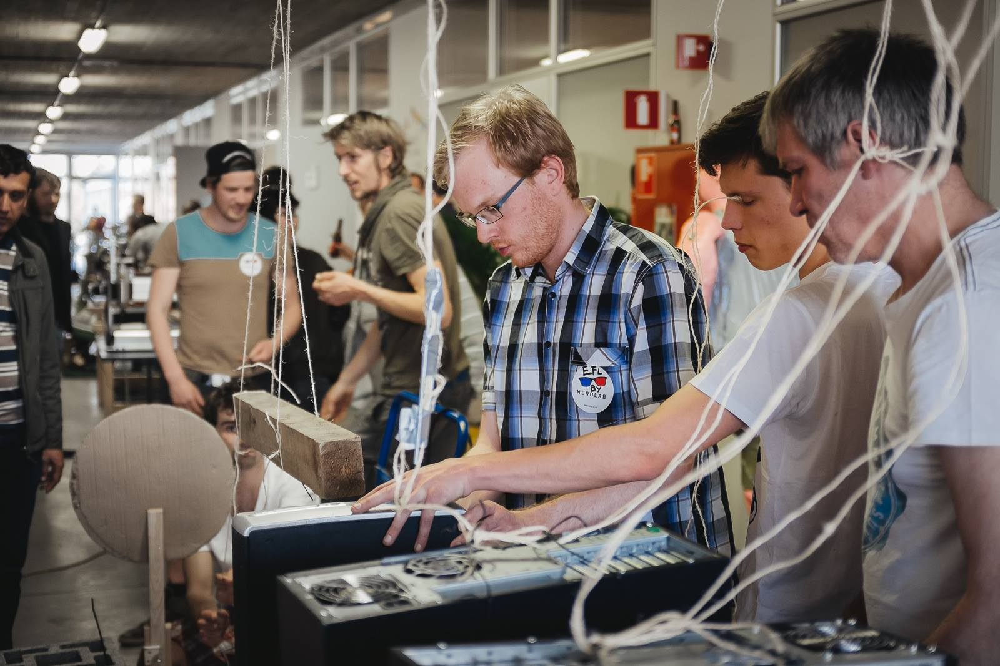
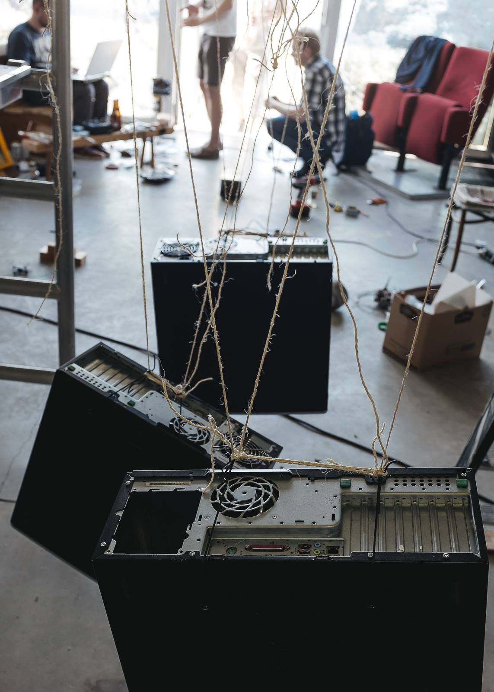
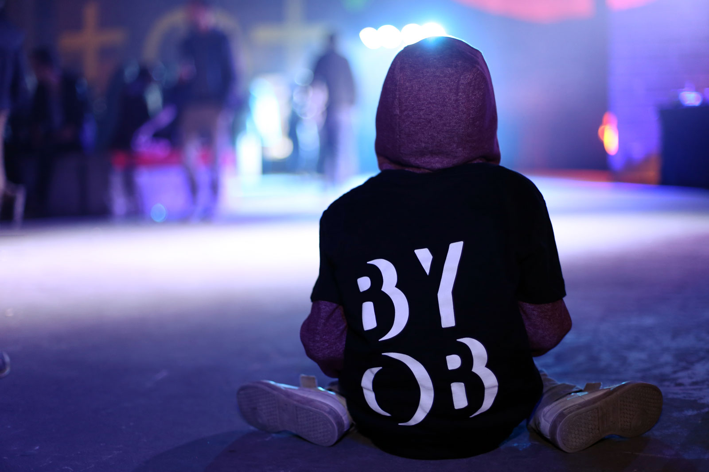
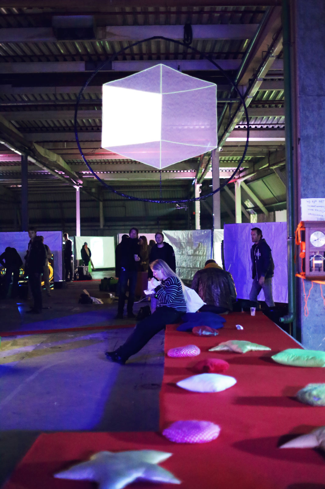
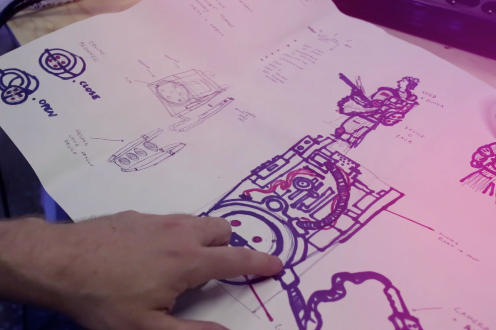
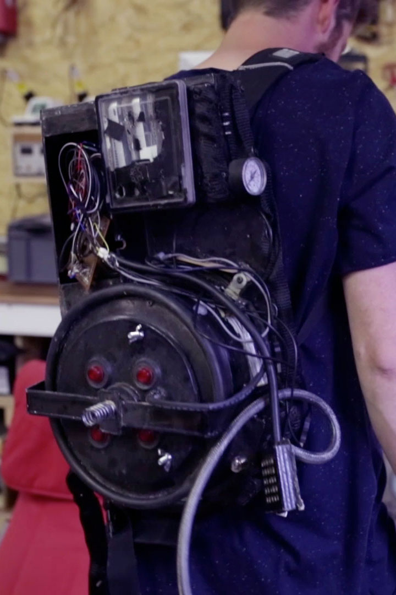

We bouwen samen dingen in Nerdlab. Fijne dingen. Uitdagende dingen. Spring gerust binnen, want jouw hulp kunnen we ongetwijfeld gebruiken! Al was het maar als proefkonijn.

Honderden schakels om iets heel eenvoudig te doen, dat zijn Rupe Goldberg machines. Denk aan een domino blokjes die omvallen, maar dan met brandende koorden en vliegende televisies. De heren van OK GO, verheven dit bouwen tot kunst en we geven ze geen ongelijk. Machien doen we graag samen met heel veel mensen van allerlei pluimage. Die ene keer was dat vooral samen met Het Entrepot.

© Kasper Vandermaesen Photography

Bring Your Own Beamer is een internationaal kunstconcept waar digitale makers hun werk komen presenteren via hun zelf meegebrachte beamer. Wij organiseren jaarlijks de grootste editie in België met een 80 tal makers en 1500 bezoekers.

© Vicky Bogaert

Een Europees project waarbij de verschillende partners gewoon in hun hoofdkwartier bleven. We bouwden een rugzak (naar het protonpack van ghostbusters) met een gps-tracker en gprs module om altijd haar locatie doorgaf. Op die manier lifte ‘EkkO’ doorheen Europa waar ze door verschillende organisaties werd ontvangen.
